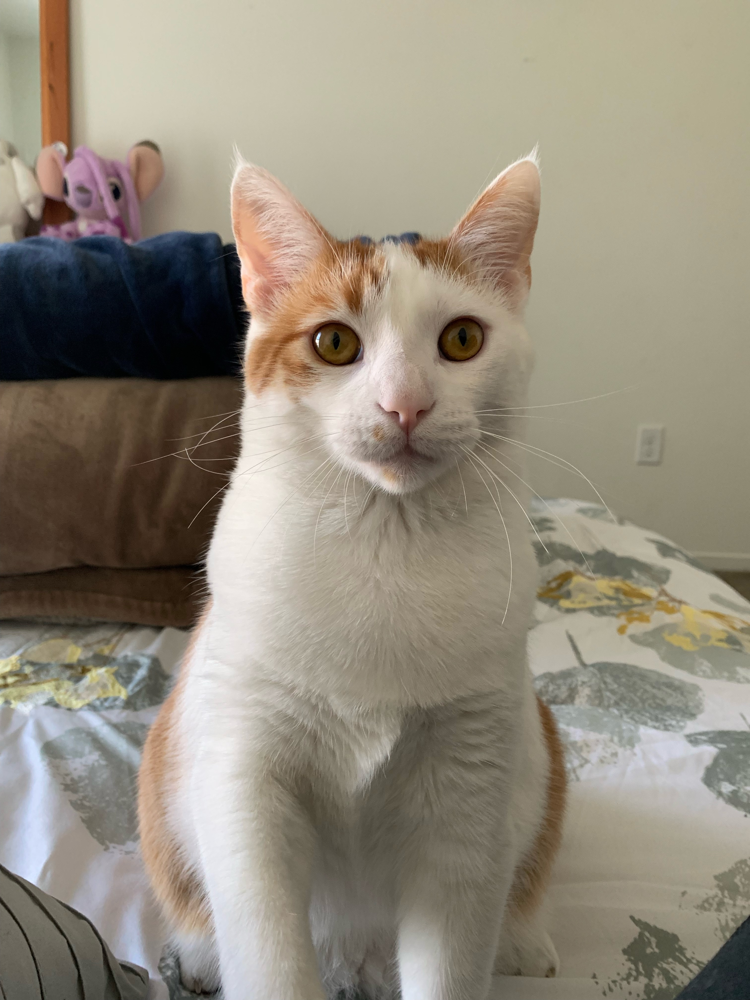
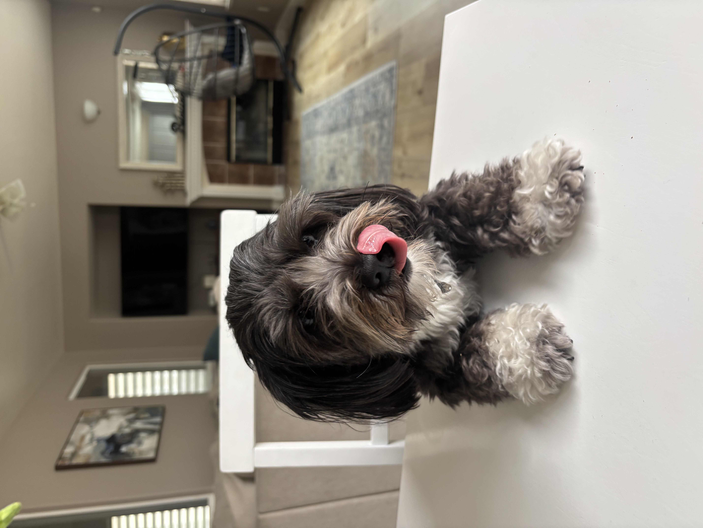
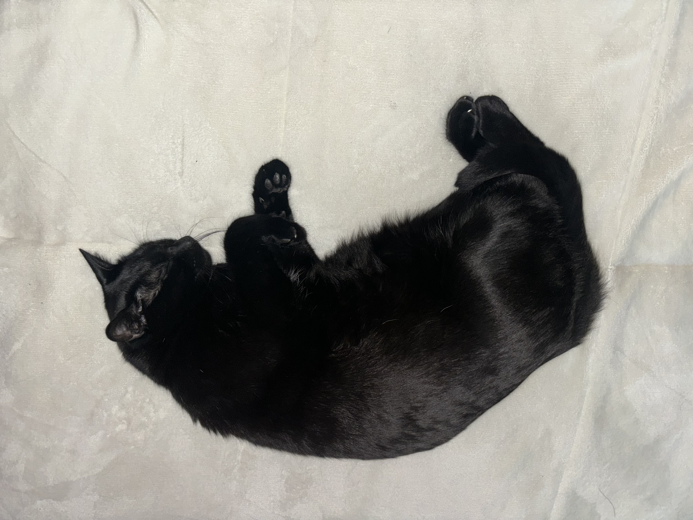

Cornelius
Sassy adventurer · Occasional gift-bringer
Cornelius has a sassy personality and a real sense of adventure. Every once in a while, he brings little presents to the front door—as if he has been out running errands for the household.

Elton
Oakland rescue · Human-food enthusiast
Elton, named after Elton John, is a rescue from Oakland. He lost his tail in a car accident, so he wobbles around a little now—but that has not slowed down his personality or his appetite. He is very food-oriented and loves human food more than cat food.

Cookie
Sweetest girl · Goat-running champion
Cookie is very sweet and maybe not always the brightest, but she makes up for it by being completely lovable. She is about the size of my cats, so all of them are best friends, and she loves running around with the goats.

Trevor
Door-opening genius · Dirt-rolling social butterfly
Trevor is the smartest of the bunch. He knows how to open doors, loves rolling around in dirt, and somehow manages to be friends with everyone.